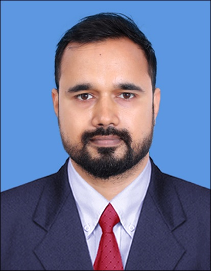

Dr. Subrata Karmakar (শ্রী সুব্রত কর্মকার )

Postdoctoral Researcher
Centre for Nanoscience and Engineering,
Indian Institute of Science, Bengaluru
ID2-424
Karnataka - 560012, India
Phone: +91 8101595574/9674225978
E-post: subratak [@] iisc [DOT] ac [DOT] in, subratakarmakar3099 [@] gmail [DOT] com
Hello, I am currently a Postdoctoral Researcher at the Centre for Nano Science and Engineering (CeNSE), Indian Institute of Science (IISc), Bengaluru. My current research focuses on the nanofabrication of molecular memristor devices.
Education
July,2019–2025: PhD, Department of Electrical Engineering, Indian Institute of Technology, Madras, Chennai, India. -Thesis: "Plannar Plasmonic Mtasurfaces for Phase Manipulations." Advisor: Dr. Ananth Krishnan, GPA: 9.43/10.
Aug,2017–July,2019: M.Tech. in Optics & Optoelectronics, Department of Applied Optics & Photonics, University of Calcutta, Kolkata, India. -Thesis: "Studies On The Optical Characteristics Of 1-D Metal-Dielectric Photonic Band Gap Material." Advisor: Prof. Rajib Chakraborty, % of Marks: 82.62/100.
Aug,2009–July,2013: B.Tech. in Electronics & Instrumentation Engineering, West Bengal University Of Technology, Kolkata, India.GPA: 8.79/10.
Professional Experience
Aug,2013–June,2017: Team Leader, Field Engineer, Honeywell Automation India Ltd.(Infosoft Digital Design & Services Pvt. Ltd.), New Delhi, India.
Research
My research interests include
Metasurfaces
Nanophotonics
Molicular memristers
Generation and use of OAM beams
Publications
Anil Ringne, Subrata Karmakar, and Ananth Krishnan, “On-axis structured beams generation via moiré and mie resonant metallo-dielectric moiré gratings,” vol. 15, issue 1, article 16544, Scientific Reports,Nature, 2025, link.
S. Karmakar, A. Ringne, N. Kumar and A. Krishnan, “Uniform dipole resonance and suppressed quadrupole resonance for constant transmittivity full phase control plasmonic metasurfaces,” vol. 14, issue 1, article 31499, Scientific Reports,Nature, 2024,link.
A. Ringne, N. Kumar, S. Karmakar, P. Pushkar, A. Krishnan, “Generation of complex beams using flattening of binary gratings,” Journal of the Optical Society of America B, vol. 41, issue 6, p. 1364-1372, 2024,link.
Subrata Karmakar, Rajorshi Bandyopadhyay, and Rajib Chakraborty, “Dual tunable multicavity resonator based photonic bandgap structure as hybrid optical filter,” In OSI-International Symposium on Optics(OSI-ISO 2018), IIT Kanpur. OSI-International Symposium on Optics(OSI-ISO 2018), 2018, link.
Journal Articles
Conference Proceedings
Contact Me
Hobbies
My hobbies include
Spirituality
Web Development (Primarily Front-End): This website is designed by me!
Recitation & Writing (Bengali)
Travelling